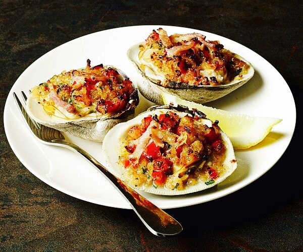

Clams Casino

Description
A delicious dish of shell things simmered in land things!
Ingredients
- Clams
- Bacon
- Shallots
- Garlic
- Red Pepper Flakes
- White Wine
- Butter
- Lemon
Steps
- Heat the oil in a heavy large skillet over medium heat. Add the pancetta and saute until crisp and golden, about 3 minutes. Using a slotted spoon, transfer the pancetta to a plate. Add the bell pepper, shallots, garlic, and oregano to the same skillet and saute until the shallots are tender and translucent, about 5 minutes. Add the wine and simmer until it is almost evaporated, about 2 minutes. Remove the skillet from the heat and cool completely. Stir the reserved pancetta and 2 tablespoons of Parmesan cheese into the vegetable mixture. Season the mixture, to taste, with salt and pepper.
- Preheat the oven to 500 degrees F.
- Line a heavy large baking sheet with foil. Arrange the clams in the reserved shells on the baking sheet. Spoon the vegetable mixture atop the clams, dividing equally and mounding slightly. Sprinkle with the remaining 2 tablespoons of Parmesan. Bake until the clams are just cooked through and the topping is golden, about 10 minutes.
- Arrange the clams on the platter and serve.